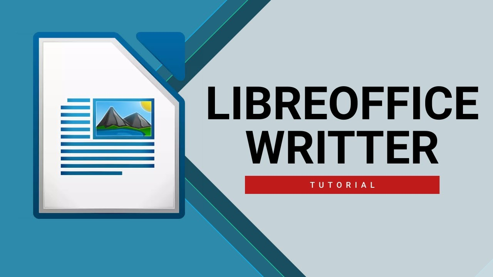
Resultados de aprendizaje y criterios de evaluacion que se evaluarán en esta unidad.
| Resultados de aprendizaje de la unidad didáctica: |
|---|
| RA. 2: Elabora documentos y plantillas, describiendo y aplicando las opciones avanzadas de procesadores de textos. |
| Criterios de evaluación de la unidad didáctica: |
|---|
| a) Se ha personalizado las opciones de software y barra de herramientas. |
| b) Se han diseñado plantillas. |
| c) Se han utilizado aplicaciones y periféricos para introducir textos e imágenes. |
| d) Se han importado y exportado documentos creados con otras aplicaciones y en otros formatos. |
| e) Se han creado y utilizado macros en la realización de documentos. |
1 - Interfaz de trabajo en Writer
Después de hacer doble clic sobre el icono de LibreOffice seleccionamos Nuevo → Documento de texto y nos encontraremos con la siguiente interfaz.
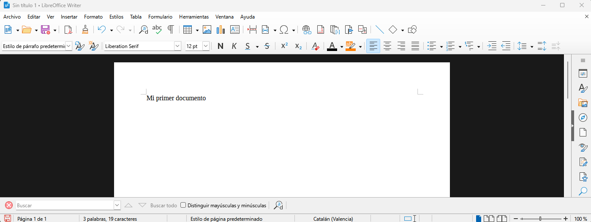
Pregunta
¿Qué es lo primero que debemos hacer cuando creamos un documento nuevo?
1.1 Menú: Archivo
Permite la creación de un archivo de texto y su posterior guardado, firmado digital, impresión, etc.
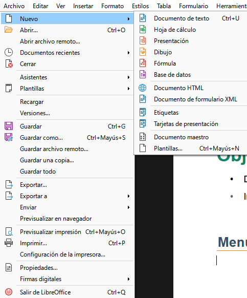
1.2 Menú: Editar
Aparte del conocido “copiar pegar” también permite buscar, reemplazar palabras...
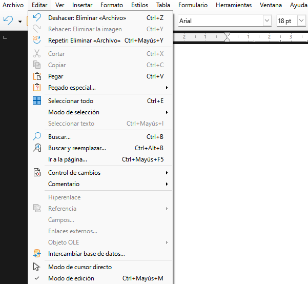
1.3 Menú: Ver
- El menú "Ver" sirve para controlar cómo se muestra el documento en pantalla y qué elementos visuales de la interfaz deseamos ver u ocultar.
- No modifica el contenido del documento, solo la forma en que se visualiza mientras trabajamos.
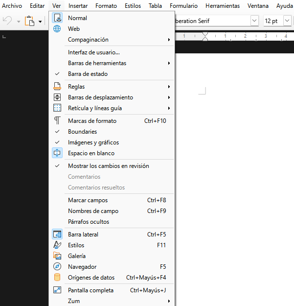
1.4 Menú: Insertar
- Ofrece opciones para incluir objetos en nuestro documento: fotografías, dibujos, tablas, ecuaciones matemáticas o incluso otros archivos.
- También se encuentran aquí algunas opciones de organización del documento, como encabezados y pies de página, numeración, portada o división en secciones.
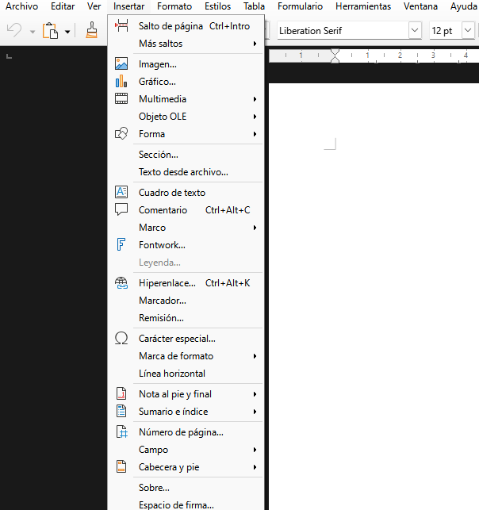
1.5 Menú: Formato
- Es, sin duda, la ventana que más se utilizará en este módulo.
- Permite dar formato y organizar nuestro texto.
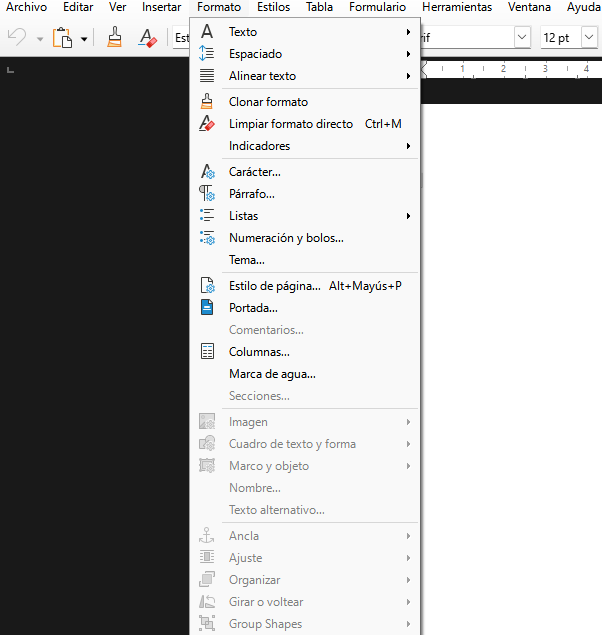
1.6 Menú: Estilos
- Casi tan importante como el menú formato, es sin duda el gran olvidado de la mayoría de usuarios.
- Dominar los estilos de texto, ahorra un tiempo importante en la elaboración de un documento y facilita sus posteriores modificaciones.
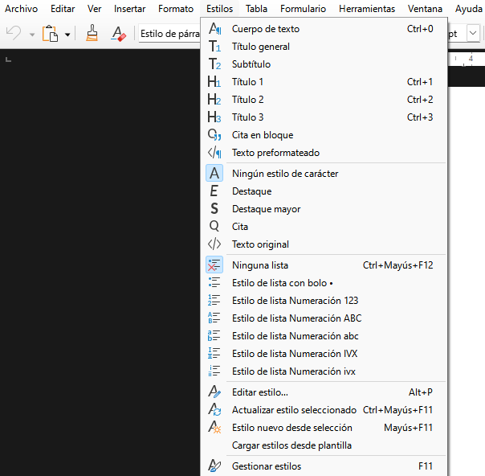
1.7 Menú: Tabla
Las tablas son una forma de estructurar datos en filas y columnas: la información se almacena en los recuadros generados por la intersección de filas y columnas, llamadas celdas.
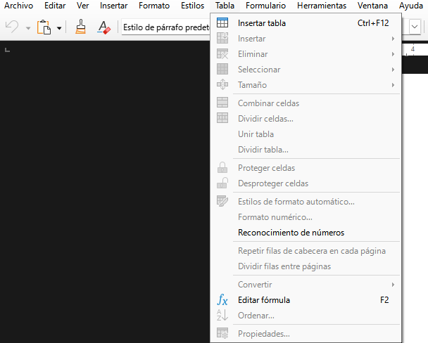
1.8 Menú: Formulario
- Sirve para crear, editar y configurar formularios interactivos dentro de un documento de texto
- Muy útil si se desea hacer plantillas para rellenar, encuestas o documentos que luego se completan digitalmente.
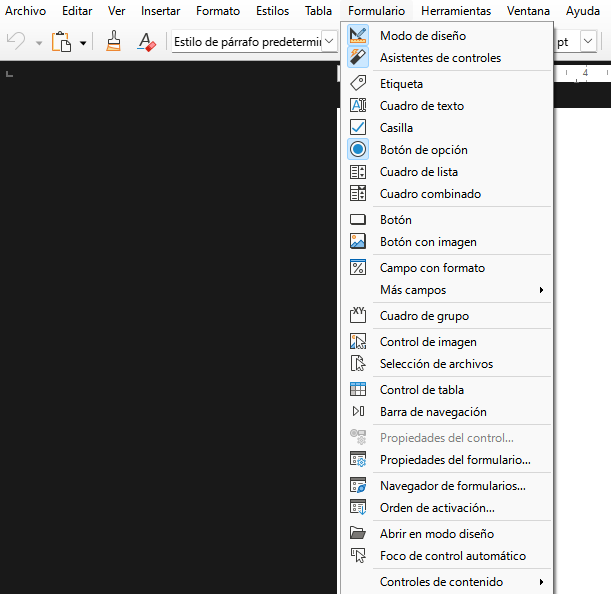
1.9 Menú: Herramientas
- Es el menú de la mayoría de herramientas de validación de un documento.
- En ese menú se encuentran las funciones de ortografía, autocorrección, macros, configuración de idioma, complementos, etc...
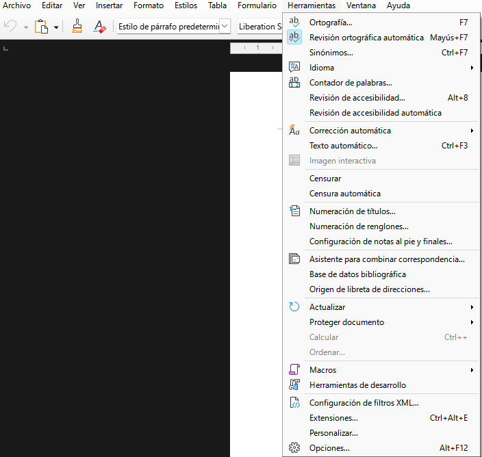
1.10 Menú: Ventana
El menú "Ventana" está pensado para gestionar las distintas ventanas o instancias del programa abiertas en ese momento. No afecta al contenido del documento, sino a cómo se interactúa con varios documentos o vistas al mismo tiempo.
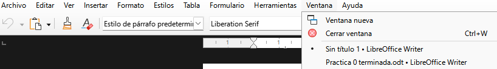
1.11 - Menú: Ayuda
Reúne todas las opciones para obtener asistencia, acceder a la documentación oficial y consultar información sobre la instalación de LibreOffice
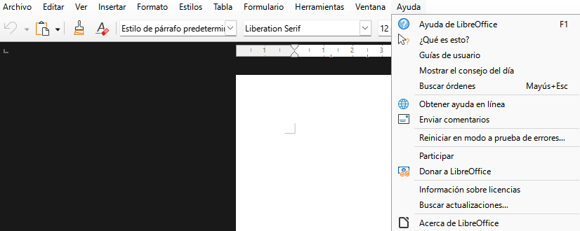
1.12 Tarea RA2-CEa - Configuración del entorno de trabajo
Tarea RA2-CEa - Parte 1 - Personalización del software utilizado.
Parte hecha en clase:
- Buscar la opción que permite cambiar el modo (día/noche) de la interfaz de usuario ¿Qué occure cuando escribimos texto?
- Buscar la opción que permite cambiar el diseño de los iconos (Opciones LibreOffice Tema).
- Buscar la opción que permite cambiar el diseño de la interfaz de usuario.
- ¿Dónde se encuentra la opción para cambiar el idioma del documento?
- ¿Qué debo hacer para que al crear un documento, este siempre esté en un languaje en concreto?
- ¿Existe la posibilidad de asignar idiomas específicos a cada párrafo?
- Configurar el procesador de texto para que realice un guardado del documento cada 1 minuto.
- ¿Qué opción permite al usuario introducir metadatos dentro del archivo creado?
- ¿Cómo se realiza un zoom? Es decir ¿Qué debo hacer para ver el documento más grande en pantalla?
- ¿Puedo cambiar la forma en la que me aparece el documento en pantalla? Ed decir ¿Qué debo hacer para poder ver el documento en vista de páginas múltiples o en vista de libro?
- ¿Qué opción me permite cambiar la forma de seleccionar palabras, letras, imágenes?
- Cambiar el tipo de letra básico de Liberation Sans a Arial.
- Configurar el archivo guardado para que solo se pueda abrir mediante contraseña.
Tarea RA2-CEa - Parte 2 - Personalización de las barras de herramientas.
Parte a entregar:
- Seleccionar las opciones que permitan mostrar las reglas, tanto horizontal como verticalmente (pista: ver).
- Seleccionar la opción que permita mostrar la barra de estilos (pista: ver).
- Cambiar la interfaz de usuario para que esta sea similar a la de Microsoft Word (pista: ver).
- Mostrar, en la interfaz de usuario, varias barras de herramientas que no aparecen por defecto (p.e. Controles de formulario y Tabla).
- Después de mostrar esas barras de herramientas, eliminar varios iconos de esas barras de herramientas de la interfaz de usuario (pista: personalizar).
- Cambiar la opción para que, en vez de una coma, sea un punto lo que aparezca en pantalla después de presionar el ‘punto’ del teclado numérico (pista: personalizar, configurar idioma, separador decimal).
Condiciones de entrega de la tarea
- Realizar una captura de un documento dónde se vean las personalizaciones de las barras de herramientas.
- Subir el documento con vuestras respuestas a la tarea RA2-CEa de Aules.
1.13 Enlaces de interés
Configuración de Libre Office Writer
2 - Familiarización con el uso de Writer
2.1 - Creación y edición básica de un documento de texto
Tarea - RA2-CEc-1
Tarea a entregar en RA2-CEc-1
1. Abre un nuevo documento, copia y pega el siguiente texto:
Michael Jeffrey Jordan (Brooklyn, Nueva York, 17 de febrero de 1963) es un exjugador de baloncesto estadounidense. Con 1,98 metros de altura, jugaba en la posición de escolta. Es considerado por la mayoría de aficionados y especialistas como el mejor jugador de baloncesto de todos los tiempos. Se retiró definitivamente a los cuarenta años en 2003 en los Washington Wizards, tras haberlo hecho en dos ocasiones anteriores, en 1993 y 1998, después de haber jugado 13 temporadas en los Chicago Bulls.
Ganó 6 anillos con Chicago Bulls, promediando 30,1 puntos por partido en toda su carrera deportiva, el mayor promedio en la historia de la liga. También ganó 10 títulos de máximo anotador, 5 MVP de la temporada, 6 MVP de las Finales; fue nombrado en el mejor quinteto de la NBA en diez ocasiones, en el defensivo nueve veces, líder en robos de balón durante tres años y un premio al mejor defensor de la temporada.
Desde 1983, ha aparecido en la portada de la prestigiosa revista deportiva Sports Illustrated en 50 ocasiones, todo un récord, además de ser designado deportista del año en 1991 y mejor atleta del siglo XX por ESPN y segundo tras Babe Ruth por Associated Press.
2. Seleccionar y mover texto:
Selecciona el segundo párrafo, cortalo y pegalo después del último párrafo.
3. Buscar y reemplazar texto:
Con la herramienta de buscar y/o buscar reemplazar localizar el texto: 10 títulos y reemplazarlo por 15 MPV.
4. Corrección ortográfica:
- Pasar el idioma del primer párrafo a idioma inglés. Es decir el Writer deberá revisar el primer párrafo como si estuviera escrito en idioma inglés.
- Pasar el idioma de la palabra Desde a catalán.
5. Guardar y guardar como:
- Guardar el documento y darle como nombre: RA2-CEc-1-NombreApellidosAlumno.
- Guardar como el documento, protegerlo con la contraseña 1234 y darle como nombre Copia RA2-CEc-1-NombreApellidosAlumno.
Condiciones de entrega de la tarea
- Subir los 2 archivos RA2-CEc-1-Nombre Alumno y Copia RA2-CEc-1-Nombre Alumno a la tarea RA2-CEc-1.
- Los archivos a subir deberan ser de tipo text open document (.odt) (formato predeterminado de LibreOffice Writer).
- No se aceptará ningún otro formato de archivo.
2.2 - Formatos de texto
Tarea - RA2-CEc-2
Tarea a entregar en RA2-CEc-2
1. Abre un nuevo documento, copia y pega el siguiente texto:
Michael, hijo de James y Deloris Jordan, nació en Brooklyn, Nueva York. Su familia se mudó a Wilmington, Carolina del Norte, cuando él era niño. Estudió en la Ogden Elementary School, y posteriormente asistió a la preparatoria Emsley A. Laney, donde, debido a sus impresionantes condiciones atléticas, jugó al baloncesto, béisbol y fútbol americano. Sin embargo, fue apartado del equipo de baloncesto en su segundo año porque para su altura (1,80 metros) estaba aparentemente subdesarrollado. El verano siguiente, creció 10 centímetros y se entrenó rigurosamente. En su último año en Laney High, promedió un triple-doble: 29,2 puntos, 11,6 rebotes y 10,1 asistencias, y fue seleccionado en el McDonald's All-American Team.
Todo el texto deberá estar inicialmente en ARIAL
2. Modificar el texto de la siguiente manera:
- Poner la primera frase en negrita.
- Poner la frase siguiente en cursiva.
- Poner la frase siguiente en subrayado.
- Poner la frase siguiente tachado.
- Poner la frase siguiente subrayado + onda.
- Poner la frase siguiente en color de fondo, verde realzado.
- Poner dentro de la última frase las palabras "McDonald's All-American Team":
- Bordes superiores e inferiores, color green 1.
- Separación superior e inferior, 0.2 y 0.1.
- Estilo de sombra: inferior izquierda.
- Color de sombra: Naranja 3.
- Distancia de sombra: 0.1cm.
- Añadir los números 2 y 10 y ponerles respectivamente el superíndice 125 y subíndice 512.
Resultado esperado
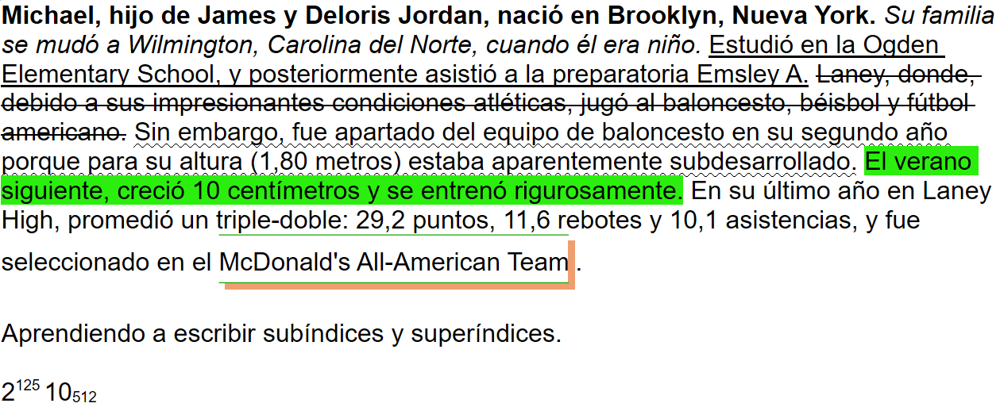
3. Copiar y pegar el texto y limpiar los formatos.
- Aplicar el color RGB 125 135 247 a la primera frase.
- Aplicar el color RGB 125 135 247 a la primera frase y poner el texta a tamaño de fuente 16pt**.
- Poner la frase siguiente con la fuente mistral.
- Poner la frase siguiente con el color púrpura y todo en mayúsculas.
- Poner la frase siguiente con la primera letra de cada palabra en mayúsculas.
- Insertar en el texto fue seleccionado el hiperenlace https://es.wikipedia.org/wiki/Michael_Jordan**.
Resultado esperado
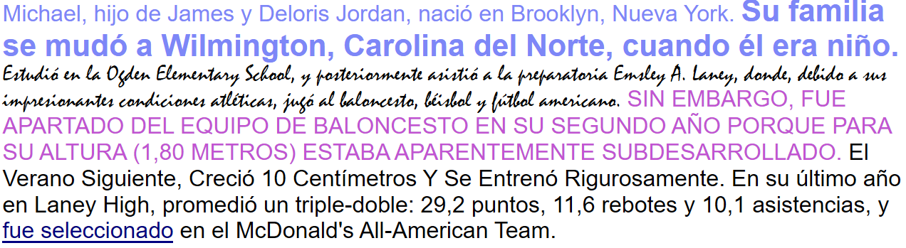
4. Copiar y pegar el texto y limpiar los formatos.
- Poner Deloris Jordan en tamaño de fuente 14, negrita y con un escalado de anchura del 85%.
- Poner Nueva York en negrita, púrpura 2 y sombra.
- Poner Carolina del norte en negrita, green 1 y giro de 270 grados.
- Poner Ogden Elementary School en azul 2 y un espaciado entre caracteres de 1.0pt.
- Poner Sin embargo en naranja 1 y con efecto contorno.
- Poner centímetros en naranja 2 y giro de 90 grados.
Resultado esperado
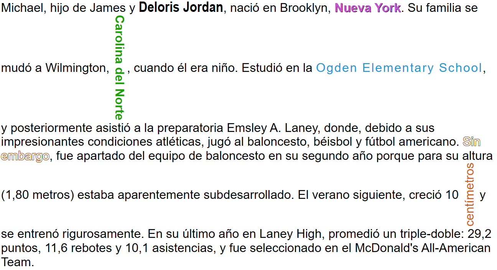
5. Aprendiendo a insertar caracteres especiales:
Escribir la siguiente frase insertando un carácter especial.
Resultado esperado
Ω es el símbolo de la unidad de medida, el ohmio , que se usa para la resistencia eléctrica.
Nota
Deberéis insertar el carácter especial omega del bloque de carácteres Griego y copto. Acordaros de subrayar la palabra ohmio.
6. Aprendiendo a escribir fórmulas:
Ir a Insertar → Objeto OLE → Objeto de fórmula... y escribir la siguiente fórmula.
Resultado esperado
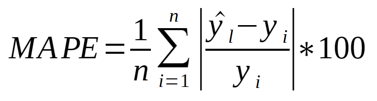
Condiciones de entrega de la tarea
- Subir vuestra tarea nombrando el archivo RA2-CEc-2-Nombre Alumno a la tarea RA2-CEc-2.
- El archivo a subir deberá ser de tipo text open document (.odt) (formato predeterminado de LibreOffice Writer).
- No se aceptará ningún otro formato de archivo.
2.3 - Formatos de párrafo
Tarea - RA2-CEc-3
Tarea a entregar en RA2-CEc-3
1. Abre un nuevo documento, copia y pega el siguiente texto:
Michael Jordan
No debe confundirse con Michael B. Jordan.
Michael Jeffrey Jordan (Brooklyn, Nueva York, 17 de febrero de 1963) es un exjugador de baloncesto estadounidense. Con 1,98 metros de altura, jugaba en la posición de escolta. Es considerado por la mayoría de aficionados y especialistas como el mejor jugador de baloncesto de todos los tiempos. Se retiró definitivamente a los cuarenta años en 2003 en los Washington Wizards, tras haberlo hecho en dos ocasiones anteriores, en 1993 y 1998, después de haber jugado 13 temporadas en los Chicago Bulls.
Ganó 6 anillos con Chicago Bulls, promediando 30,1 puntos por partido en toda su carrera deportiva, el mayor promedio en la historia de la liga. También ganó 10 títulos de máximo anotador, 5 MVP de la temporada, 6 MVP de las Finales; fue nombrado en el mejor quinteto de la NBA en diez ocasiones, en el defensivo nueve veces, líder en robos de balón durante tres años y un premio al mejor defensor de la temporada.
Desde 1983, ha aparecido en la portada de la prestigiosa revista deportiva Sports Illustrated en 50 ocasiones, todo un récord, además de ser designado deportista del año en 1991 y mejor atleta del siglo XX por ESPN y segundo tras Babe Ruth por Associated Press.
En la actualidad es el propietario del equipo 23XI Racing en la Copa NASCAR, y, desde 2010 a 2023, fue propietario de los Charlotte Hornets en la NBA.
En 2021 se calculaba que su patrimonio neto era de $1600 millones, fortuna que ascendió a los $3000 millones en octubre de 2023, entrando en la lista Forbes 400, siendo la primera vez que un deportista profesional figura entre las personas más ricas de Estados Unidos.
2. Modificar los párrafos de la siguiente manera:
- Primer párrafo: centrado.
- Párrafo siguiente: alinear a la izquierda.
- Párrafo siguiente: alinear a la izquierda.
- Párrafo siguiente: alinear a la derecha.
- Párrafo siguiente: justificado.
- Párrafo siguiente: aumentar sangria una vez.
- Párrafo siguiente: aumentar sangria 2 veces.
Resultado esperado
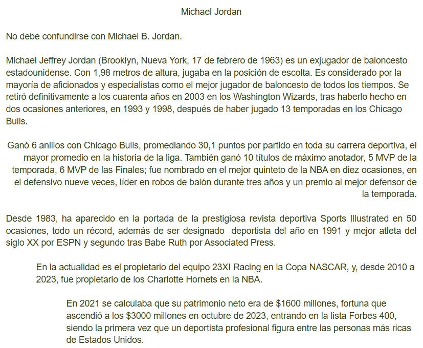
3. Copiar y pegar los párrafos en el mismo documento de la siguiente manera:
- Copiar el pegar el documento creado anteriormente insertando un salto de página.
- Primer párrafo: Espacio sobre el párrafo 0.5cm, debajo 1.5cm
- Párrafo siguiente: Espacio sobre el párrafo 0.0cm, debajo 0.50cm
- Resto párrafos: Espacio sobre el párrafo 0.0cm, debajo 0.75cm
4. Seguir con el texto anterior y además modificar los estilos de párrafos con:
- Párrafo 4:
- Interlineado 1.5 renglones.
- Sangría antes de texto: 0.5cm.
- Sangría después de texto: 0.3cm.
- Primer renglón: 0.5cm
- Párrafo 5:
- Interlineado 2 renglones.
- Sangría antes de texto: 1cm.
- Sangría después de texto: 1cm.
- Primer renglón: 1cm.
- Párrafo 6:
- Interlineado 2 renglones.
- Sangría antes de texto: 0cm.
- Sangría después de texto: 0cm.
- Primer renglón: 1cm.
- Párrafo 7:
- Interlineado 1.5 renglones.
- Sangría antes de texto: 0.5cm.
- Sangría después de texto: 0.3cm.
- Primer renglón: 0.5cm
- Letras capitulares: Caracteres=2, Renglones=2.
Resultado esperado
¡Cuidado con los estilos de texto o de párrafo que se han incorporado pero no se han mencionado!
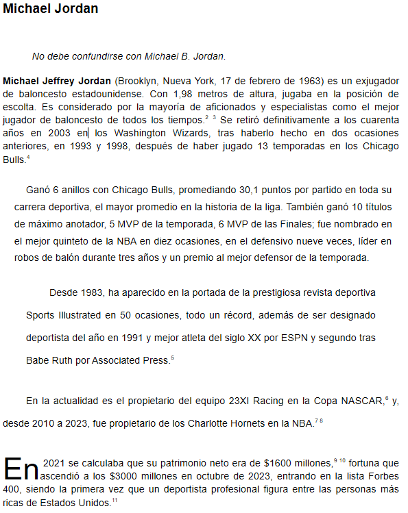
Condiciones de entrega de la tarea
- Subir vuestra tarea nombrando el archivo RA2-CEc-3-Nombre Alumno a la tarea RA2-CEc-3.
- El archivo a subir deberá ser de tipo text open document (.odt) (formato predeterminado de LibreOffice Writer).
- No se aceptará ningún otro formato de archivo.
Tarea - RA2-CEc-4
Tarea a entregar en RA2-CEc-4
1. Abre un nuevo documento, copia y pega el siguiente texto:
Michael Jordan
No debe confundirse con Michael B. Jordan.
Michael Jeffrey Jordan (Brooklyn, Nueva York, 17 de febrero de 1963) es un exjugador de baloncesto estadounidense. Con 1,98 metros de altura, jugaba en la posición de escolta. Es considerado por la mayoría de aficionados y especialistas como el mejor jugador de baloncesto de todos los tiempos.[2][3] Se retiró definitivamente a los cuarenta años en 2003 en los Washington Wizards, tras haberlo hecho en dos ocasiones anteriores, en 1993 y 1998, después de haber jugado 13 temporadas en los Chicago Bulls.[4]
Ganó 6 anillos con Chicago Bulls, promediando 30,1 puntos por partido en toda su carrera deportiva, el mayor promedio en la historia de la liga. También ganó 10 títulos de máximo anotador, 5 MVP de la temporada, 6 MVP de las Finales; fue nombrado en el mejor quinteto de la NBA en diez ocasiones, en el defensivo nueve veces, líder en robos de balón durante tres años y un premio al mejor defensor de la temporada.
Desde 1983, ha aparecido en la portada de la prestigiosa revista deportiva Sports Illustrated en 50 ocasiones, todo un récord, además de ser designado deportista del año en 1991 y mejor atleta del siglo XX por ESPN y segundo tras Babe Ruth por Associated Press.[5]
En la actualidad es el propietario del equipo 23XI Racing en la Copa NASCAR,[6] y, desde 2010 a 2023, fue propietario de los Charlotte Hornets en la NBA.[7][8]
12,366 11251,695 6,22566 1259,26 3,2256
2. Modificar los párrafos de la siguiente manera:
- Primer párrafo: no hacer nada.
- Párrafo siguiente: añadir un tabulador izquierdo a 0.5cm.
- Párrafo siguiente: añadir un tabulador izquierdo a 1.5cm.
- Párrafo siguiente: añadir un tabulador izquierdo a 1.5cm.
- Párrafo siguiente: añadir un tabulador derecho a 10cm.
- Párrafo siguiente: añadir un tabulador centrado a 5cm.
- Párrafo siguiente: añadir un tabulador decimal a 12cm.
- Primer párrafo: añadir un tabulador para que el texto quede como se ve an la imagen.
Resultado esperado
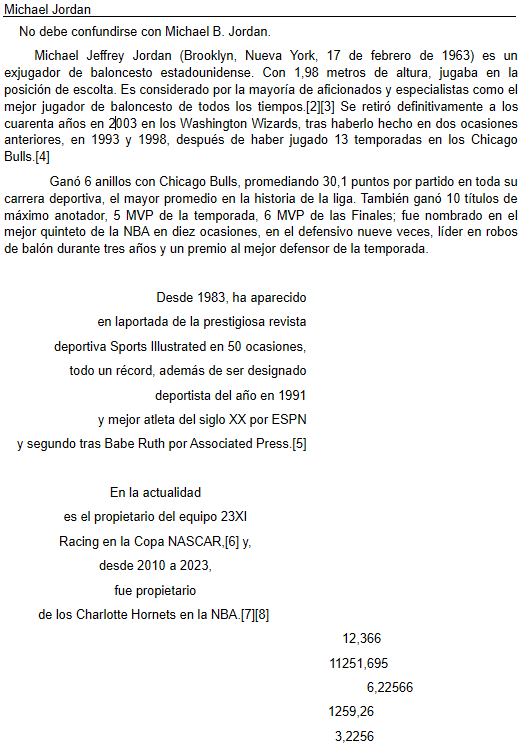
Condiciones de entrega de la tarea
- Subir vuestra tarea nombrando el archivo RA2-CEc-4-Nombre Alumno a la tarea RA2-CEc-4.
- El archivo a subir deberá ser de tipo text open document (.odt) (formato predeterminado de LibreOffice Writer).
- No se aceptará ningún otro formato de archivo.
Tarea - RA2-CEc-5
Tarea a entregar en RA2-CEc-5
1. Abre un nuevo documento, copia y pega el siguiente texto.
El que suscribe, Don PATRICIO RUIZ MAÑOSA, de 21 años de edad, hijo de Don Críspulo Ruiz Beltrán y de Doña Leonor Mañosa Abad, natural de Alcaudete (Jaén) y con domicilio en esta ciudad, Avenida de Coria, 17,
EXPONE: Que siendo una persona con gran interés en la música y la danza, como acredita con los documentos y vídeos que acompaña, se halla incluido en los criterios que las bases del concurso para el Festival de Verano señalan para la participación en el mismo. Acogiéndose a lo dispuesto en ellas, y con el propósito de aportar su talento y contribuir a la alegría del festival,
SOLICITA: Se sirva ordenar que le sea concedida, si es que lo merece en justicia, una de las plazas para actuar en la gran final.
En Sevilla, a cuatro de marzo de 2025.
2. Modifica los estilos de párrafos para que quede la siguiente manera (sangría francesa).
3. Añade después del texto anterior el texto que aparece en la imagen y usa tabuladores para ordenarlo.
Resultado esperado
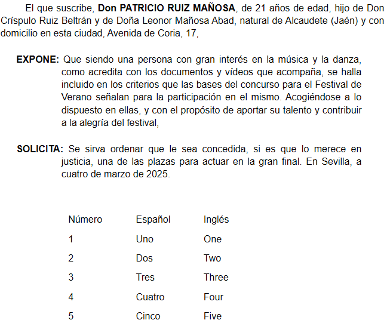
Condiciones de entrega de la tarea
- Subir vuestra tarea nombrando el archivo RA2-CEc-5-Nombre Alumno a la tarea RA2-CEc-5.
- El archivo a subir deberá ser de tipo text open document (.odt) (formato predeterminado de LibreOffice Writer).
- No se aceptará ningún otro formato de archivo.
2.5 - Viñetas y numeración de títulos y párrafos
Tarea - RA2-CEc-6
Tarea a entregar en RA2-CEc-6
1. Abre un nuevo documento, copia y pega el siguiente texto:
OPERACIONES BÁSICAS:
Entrar en el programa.
Guardar un documento por primera vez.
Recuperar un archivo.
Fuentes, tamaños y colores.
ENTRAR EN EL PROGRAMA:
Desplegar el menú Inicio.
Seleccionar el apartado Programas.
En el segundo menú pinchar sobre la opción correspondiente.
GUARDAR UN DOCUMENTO POR 1a VEZ:
Desplegar el menú Archivo.
Elegir la opción Guardar como.
Seleccionar la unidad de almacenamiento.
Escribir el nombre con el que se vaya a guardar el documento.
Pulsar el botón Guardar.
RECUPERAR UN ARCHIVO:
Desplegar el menú Archivo.
Elegir la opción Abrir.
Indicar la unidad en la que está almacenado el documento.
Seleccionar el archivo de la lista.
Pulsar el botón Abrir.
FUENTES, TAMAÑOS Y COLORES:
Desplegar el menú Formato.
Seleccionar la opción Fuentes.
Seleccionar una fuente, un tamaño para el texto y un color.
2. Incorporar numeraciones y viñetas para que el texto quede de la siguiente manera.
- Tener en cuenta los formatos que ya conoceís: Parrafo, texto, etc. Cualquier aportación personal para aportar vistosidad y legibilidad al texto será bienvenida.
- No hacer fontaneria. El espacio entre elementos de texto deberá realizarse eligiendo correctamente los parámetros de cada elemento, no realizando saltos de línea.
Resultado esperado
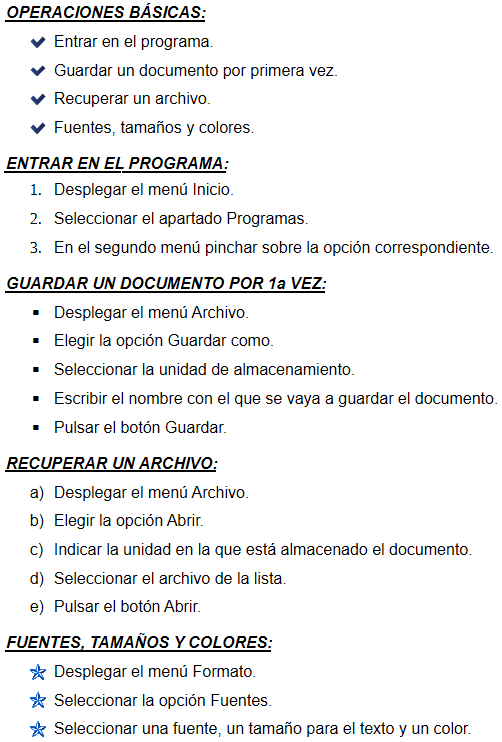
3. Realiza un salto de página en el documento anterior, copia y pega el siguiente texto:
Introducción al programa
Utilidad del Procesador de Texto.
Entrar en Procesador de Texto.
Los elementos de la pantalla.
Barra de Título.
Barra de menús.
Barra de herramientas Estándar.
Barra de Formato.
Barra de Regla.
Barra de Estado.
Salir del programa.
Gestión de archivos
Guardar un documento nuevo.
Recuperar un archivo.
Guardar cambios.
Diferencias entre Guardar y Guardar como. Guardar actualiza un documento existente, sobrescribiendo la versión anterior con los cambios que has hecho. Por otro lado, Guardar como te permite guardar una nueva copia del documento. Puedes elegir una nueva ubicación, un nuevo nombre de archivo o un formato de archivo diferente, dejando el documento original sin modificar.
Formato del documento
Márgenes.
Interlineado.
Espacio entre párrafos.
Sangrías.
Sangría 1ª línea.
Sangría izquierda.
Sangría derecha.
4. Incorporar numeraciones y viñetas para que el texto quede de la siguiente manera.
Resultado esperado
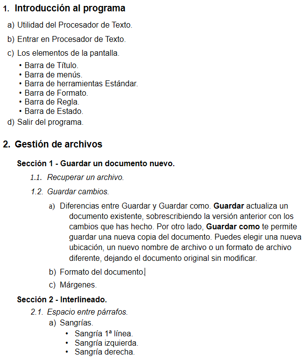
Condiciones de entrega de la tarea
- Subir vuestra tarea nombrando el archivo RA2-CEc-6-Nombre Alumno a la tarea RA2-CEc-6.
- El archivo a subir deberá ser de tipo text open document (.odt) (formato predeterminado de LibreOffice Writer).
- No se aceptará ningún otro formato de archivo.
2.6 - Estilos y plantillas
Tarea - RA2-CEb-1
En este apartado aprenderemos a definir estilos para todos los elementos de nuestro documento de texto.
Tarea a entregar en RA2-CEb-1
1. Descargar y abrir el archivo 'RA2-CEb-1' pinchando en el enlace siguiente: Descargar archivo
2. Crear un nuevo estilo MisEstilos. Dejar la configuración por defecto y solo modificar el tipo de letra a Arial 12. Acordaros de elegir Heredar de ninguno, si no, creará el estilo dentro de Estilo de párrafo predeterminado.
3. Crear 3 sub estilos Cabeceras, Párrafos y Títulos (realmente no son estilos, sino carpetas donde iremos creando los estilos para cada apartado del documento)."
Resultado esperado
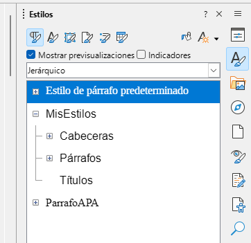
4. Dentro de Cabeceras crear el estilo Cabecera centrada con un resultado similar al de la siguiente imagen. (Sois libres de incorporar más características al estilo)"
Resultado esperado
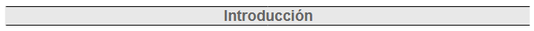
5. Dentro de Cabeceras crear el estilo Cabecera conclusión con un resultado similar al de la siguiente imagen.
Nota importante
Cada vez que se use ese estilo se deberá insertar automáticamente un salto de página.
Resultado esperado
6. Dentro de Párrafos, crear 4 estilos:
- Párrafo centrado
- Párrafo izquierdo
- Párrafo normal
- viñeta 1
Resultado esperado
-
Párrafo normal (cuidado con los márgenes izquierdo y derecho)
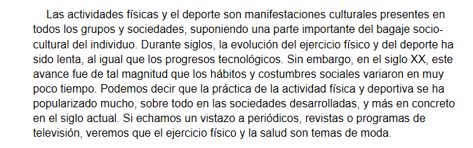
-
Párrafo centrado
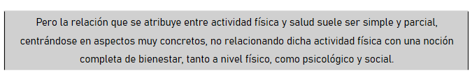
-
Párrafo izquierdo
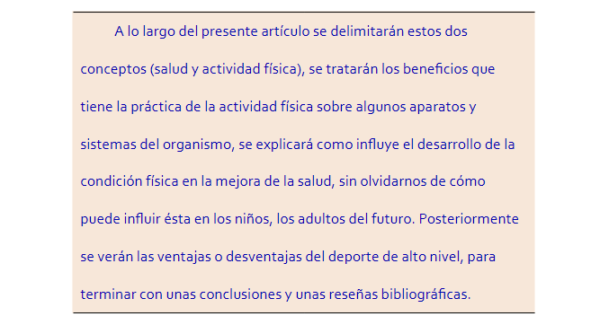
-
viñeta 1
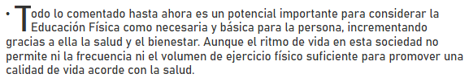
7. Dentro de Párrafo normal crear el estilo Párrafo numerado con el siguiente resultado:"
Nota
- Ese estilo es idéntico al estilo Párrafo normal.
- Para evitar de buscar una a una las características del estilo Párrafo normal lo que haremos es, al definir Párrafo numerado, heredar los estilos de Párrafo normal.
- El estilo Párrafo numerado quedará de la siguiente manera (Como podeís ver se ha aplicado un estilo de carácter especial al numerador) :
Resultado esperado
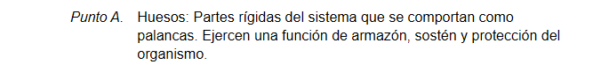
8. Dentro de Títulos crear el estilo Títulos-1 con el siguiente resultado.
Nota 1
Configurar el estilo para que inserte automáticamente un salto de página antes del texto seleccionado.
Nota 2
Configurar el estilo para que, al aplicar el estilo, se inserte automáticamente la numeración 'Apartado xx.'.
Resultado esperado
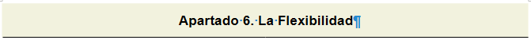
9. Resumen de todos los estilos:
Resultado esperado
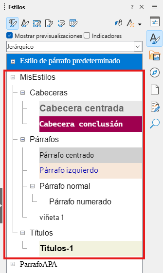
10. Aplicar los estilos al texto del documento. Recordad que también teneís que terminar de modificar los estilos para respetar los márgenes, fuentes y tamaño de fuentes del documento de muestra.
Condiciones de entrega de la tarea
- Subir vuestra tarea nombrando el archivo RA2-CEb-1-Nombre Alumno a la tarea RA2-CEb-1.
- El archivo a subir deberá ser de tipo text open document (.odt) (formato predeterminado de LibreOffice Writer).
- No se aceptará ningún otro formato de archivo.
Tarea - RA2-CEb-2
En este apartado aprenderemos a definir plantillas sobre los estilos creados anteriormente, lo que permetrá ahorrar un tiempo considerable en la redacción de documentos nuevos.
Tarea a entregar en RA2-CEb-2
Crear una plantilla de un documento de texto no es otra cosa que crear un archivo que contendrá todos los estilos y los campos que se repiten documento a documento.
1. Recuperar vuestro documento de la tarea RA2-CEb-1.
2. Eliminar todo el texto y solo dejar un texto con el nombre de los estilos.
Os podéis ayudar con el siguiente documento
3. Guardar el documento como plantilla, categoría Mis plantillas con el siguiente nombre: Tarea RA2-CEc Nombre Apellidos.
4. Recuperar la plantilla y subidla a la tarea RA2-CEb-2 de Aules.
Condiciones de entrega de la tarea
- Subir vuestra tarea nombrando el archivo RA2-CEb-2-Nombre Alumno a la tarea RA2-CEb-2.
- El archivo a subir deberá ser de tipo plantilla de texto de OpenDocument (.ott) (formato predeterminado de plantillas de LibreOffice Writer).
- No se aceptará ningún otro formato de archivo.
2.7 - Paginación, tablas, encabezado, pie de página e imágenes
Tarea - RA2-CEd
Tarea a entregar en RA2-CEd
1. Descargar y descomprimir el archivo 'Tarea RA2-CEd pinchando en el enlace siguiente: Descargar archivo
2. Estilos de página.
Ir a Estilos de página → Primera página → Editar estilo → Configurar con los siguientes datos.
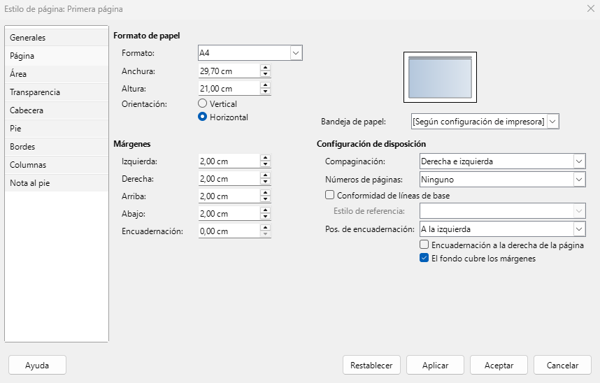
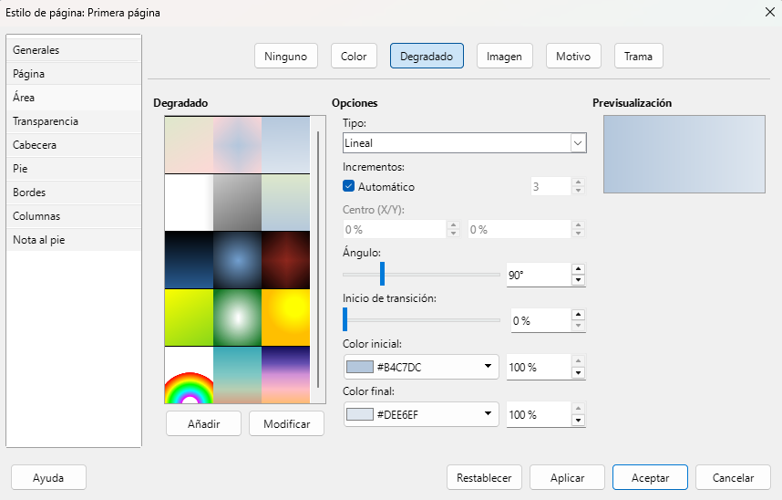
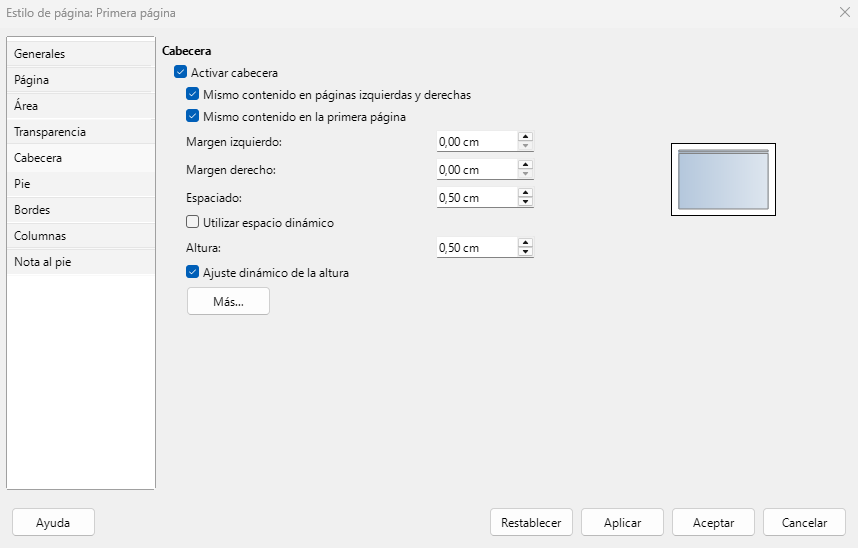
Ir a Estilo de página predeterminado y configurar con los siguientes datos.
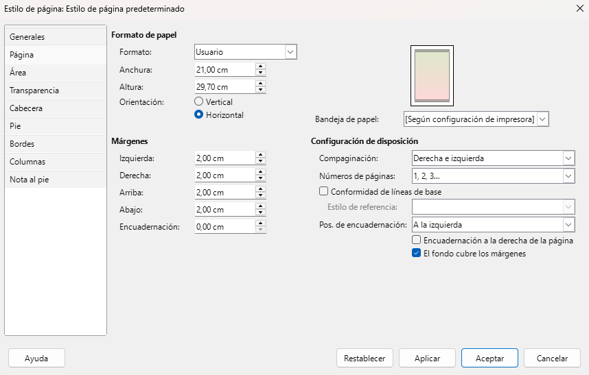
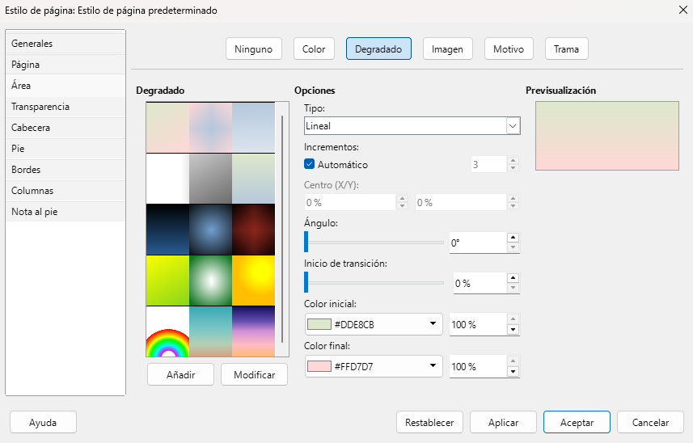
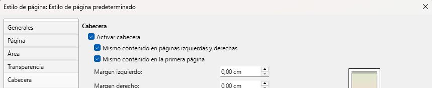
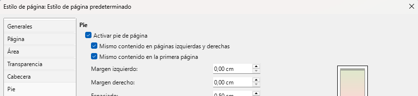
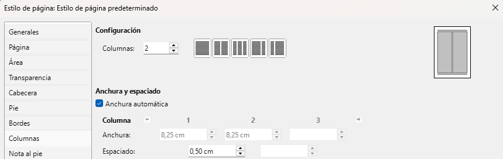
Dentro de los estilos de página crear el Estilo de página especial y configurar con los siguientes datos.
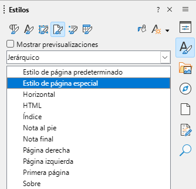
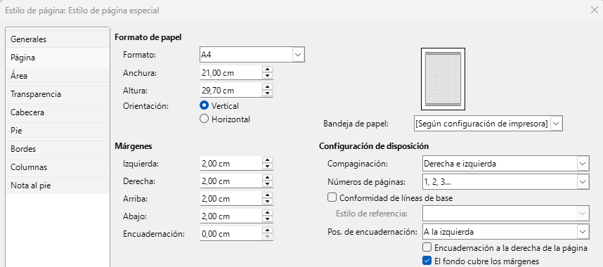
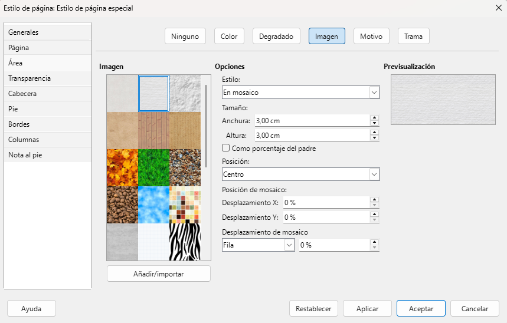
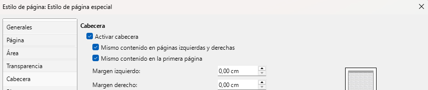
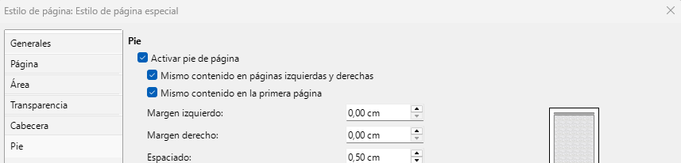
Concatenar los estilos de la siguiente manera:
Primera página → Estilo de página predeterminado → Estilo de página especial
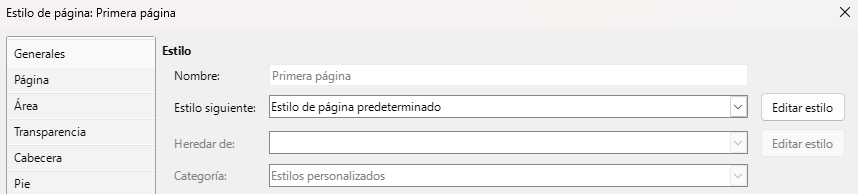
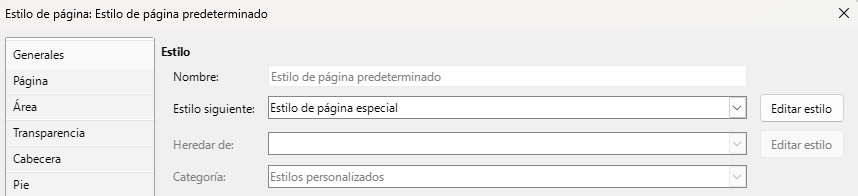
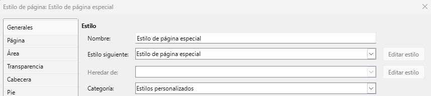
hasta aqui
!!! exercise "**3. Estilos de títulos.**"
!!! tip "Editar el estilo **Título 1** → Configurar con los siguientes datos."
{.cien .marginbottom20}
{.cien .marginbottom20}
{.cien }
!!! tip "Editar el estilo **Título 2** → Configurar con los siguientes datos."
{.cien .marginbottom20}
{.cien .marginbottom20}
{.cien }
!!! tip "Editar el estilo **Título 3** → Configurar con los siguientes datos."
{.cien .marginbottom20}
{.cien .marginbottom20}
{.cien}
!!! exercise "**4. Estilos de texto.**
**a.** Ir al estilo **Cuerpo de texto** y configurar con los siguientes datos.
{.sietecinco} <br>
{.sietecinco} <br>
{.sietecinco} <br>
**b.** Ir al estilo **Contenido de la tabla** y configurar con los siguientes datos.
{.sietecinco} <br>
{.sietecinco} <br>
**c.** Ir al estilo **Título de la tabla** y configurar con los siguientes datos.
{.sietecinco} <br>
{.sietecinco} <br>
{.sietecinco} <br>
**d.** Ir al estilo **Leyenda** y configurar con los siguientes datos.
{.sietecinco} <br>
{.sietecinco} <br>
{.sietecinco} <br>
**5. Estilos de marco.**
Ir a **Estilos de marco** → **Imagen** y configurar con los siguientes datos.
{.sietecinco} <br>
**6. Estilos de cabecera y pie de página.**
**a.** Cabecera.
{.sietecinco}
{.sietecinco}
{.sietecinco}
**b.** Pie de página.
{.sietecinco}
{.sietecinco}
{.sietecinco}
**7. Aplicar estilos de página.**
Aplicar los estilos a las páginas de la siguiente manera:
**a.** Página 1 → Estilo **Primera página**.
**b.** Página 2 → Estilo **Estilo de página predeterminado**.
**c.** Página 3 → Estilo **Estilo de página especial**.
**8. Aplicar estilos de títulos y texto.**
Aplicar los estilos de títulos de la siguiente manera:
**a.** Título 1 → Michael Jordan.
**b.** Título 2 → Biografía, Trayectoria profesional.
**c.** Título 3 → Universidad, Estadísticas, Primeros años.
**d.** Cuerpo de texto → Todo el texto.
**9.** **Modificar las propiedades de partes del texto** para que se vean como en el documento adjuntado a la práctica.
**10.** **Modificar las propiedades de los párrafos** para que se vean como en el documento adjuntado a la práctica.
**11.** **Insertar una tabla**.
**a.** Modificar las propiedades de la siguiente manera
{.cincozero}
{.cincozero} <br>
**b.** Personalizar las propiedades de celdas y texto para que el resultado sea como el siguiente.
{.cincozero} <br>
**12.** **Insertar las 2 imágenes**.
**a. Imagen 1**
**Insertar** la imagen de Michael Jordan.
**Insertar** una leyenda sobre la imagen.
**Como podemos ver**, al insertar la leyenda hemos creado un marco que contiene la imagen.
**Editamos las propiedades del marco de la siguiente manera:**
{.cincozero}
{.cincozero}
Una vez el marco a la escala, movemos el marco a la posición deseada.
**a. Imagen 2**
**Insertar** la imagen de las camisetas.
{.cincozero}
{.cincozero}
Una vez el marco a la escala, movemos el marco a la posición deseada.
**13.** **Cabecera y pie de página**.
**a. Cabecera página 1**
**Anclar** la imagen al párrafo de la cabecera.
**Podéis** ajustar la posición al gusto de cada uno.
{.cincozero}
**a. Cabecera páginas 2 y 3**
**Anclar** la imagen al párrafo de la cabecera **como en la página 1**.
**Escribir Tarea RA2-CEd y vuestro nombre y apellidos**.
**b. Pie de página, página 2 y 3**
**Escribir el texto del pie de página** y además **insertar un campo con la página actual y el recuento de páginas**.
**14.** **Entrega de la tarea**.
Subir el archivo en **formato .odt (open text document)** a la tarea RA2-CEd. No se admitirá ningún otro tipo de formato.
2.8 - Exportar a otros formatos
Tarea - RA2-CEe
Tarea a entregar en RA2-CEe
Exportar la tarea RA2-CEd a formato pdf y subirla a la tarea RA2-CEe.
2.9 - Macros
2.9.1 - Instalar JRE
Antes de nada comprobaremos si tenemos el JRE (Java Runtime Environment) instalado en nuestro ordenador. Para ello abriremos una terminal y escribiremos:
Si no devuelve la versión de JRE, significa que lo tenemos instalado.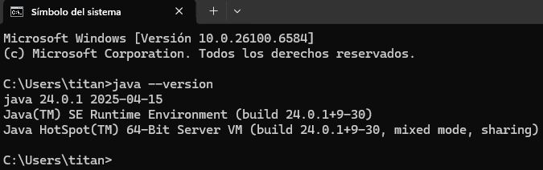
De lo contrario, iremos a la página de descarga, descargaremos la versión adecuada a nuestro sistema operativo y lo instalaremos.
2.9.2 - Habilitar la grabación de macros en LibreOffice
La grabación de macro viene deshabilitado por defecto en LibreOffice. Para habilitar las grabaciones de macros iremos a Herramientas → Opciones → Avanzadas y activaremos la grabación de macros.
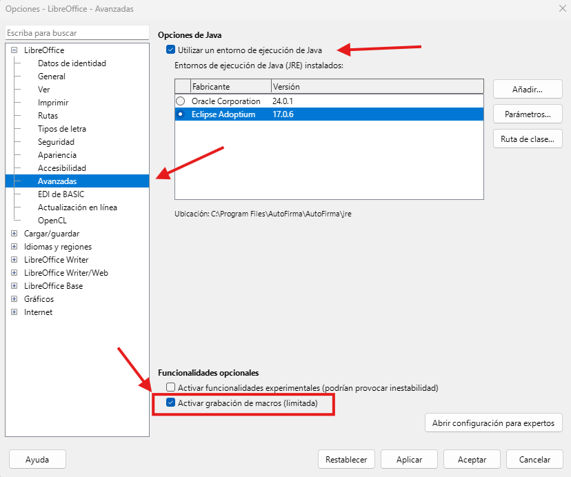
Tarea - RA2-CEf
Tarea a entregar en RA2-CEf
Descargar y descomprimir el archivo 'Tarea RA2-CEf pinchando en el enlace siguiente: Descargar archivo
Ejercicio 1
Grabar una macro que inserte automáticamente un encabezado con el siguiente texto:
1. Documento escrito por el alumno: Insertar campo → Autor → Nombre completo. (Arial, 16, negrita, gris, centrado).
2. Fecha de redacción: Insertar campo → Fecha fija (Arial, 12, cursiva, centrado, formato de fecha ISO: AAAA-MM-DD).
3. Hora de redacción: Insertar campo → Hora fija (Arial, 12, cursiva, centrado, formato de hora: hh-mm-ss).
4. Guardar la macro dentro del documento para que al exportar el archivo la macro acompañe al documento.
5. Crear un atajo de teclado que permita ejecutar la macro con (p.e.) ctrl q.
Resultado esperado
Ejercicio 2
Grabar una macro que modifique un párrafo de la siguiente manera:
1. Interlineado doble, justificado y espaciado sobre y debajo del párrafo: 0.5cm.
2. Insertar un borde con una separación de 0.5cm.
3. Aplicar la macro al documento alternando párrafos.
4. Guardar la macro dentro del documento para que al exportar el archivo la macro acompañe al documento.
5. Crear un atajo de teclado que permita ejecutar la macro con (p.e.) ctrl a.
Resultado esperado
Condiciones de entrega de la tarea
- Subir vuestra tarea nombrando el archivo RA2-CEf-Nombre Alumno a la tarea RA2-CEf.
- El archivo a subir deberá ser de tipo text open document (.odt) (formato predeterminado de LibreOffice Writer).
- No se aceptará ningún otro formato de archivo.
| Licencia Creative Commons: | |
|---|---|
 |
Reconocimiento-NoComercial-CompartirIgual CC BY-NC-SA: No se permite un uso comercial de la obra original ni de las posibles obras derivadas, la distribución de la cuales se debe hace con una licencia igual a la que regula la obra original. |